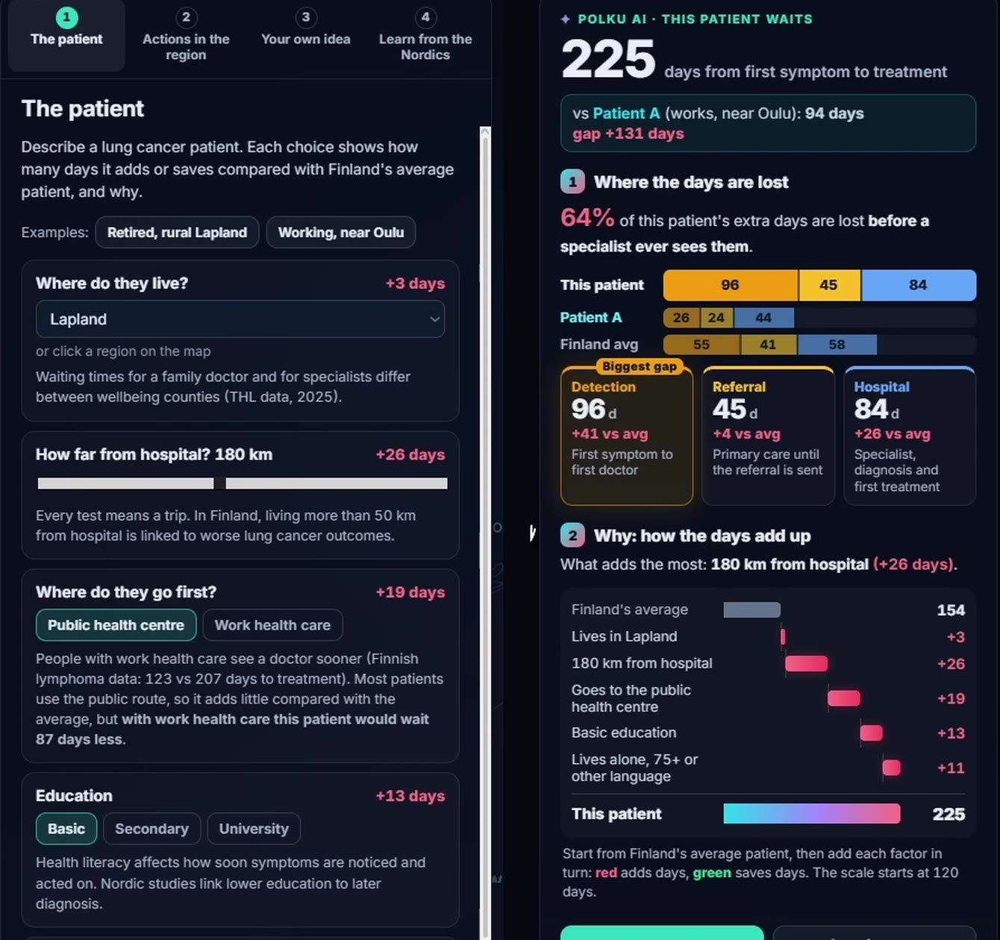
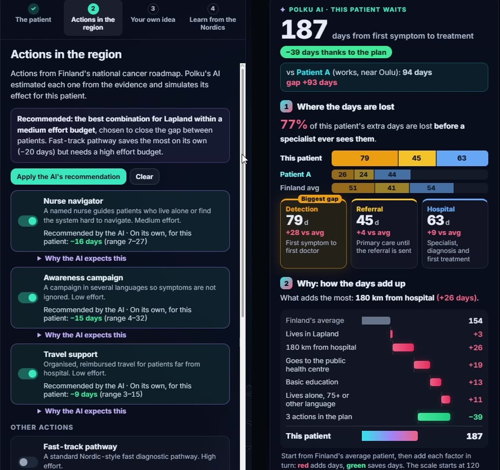
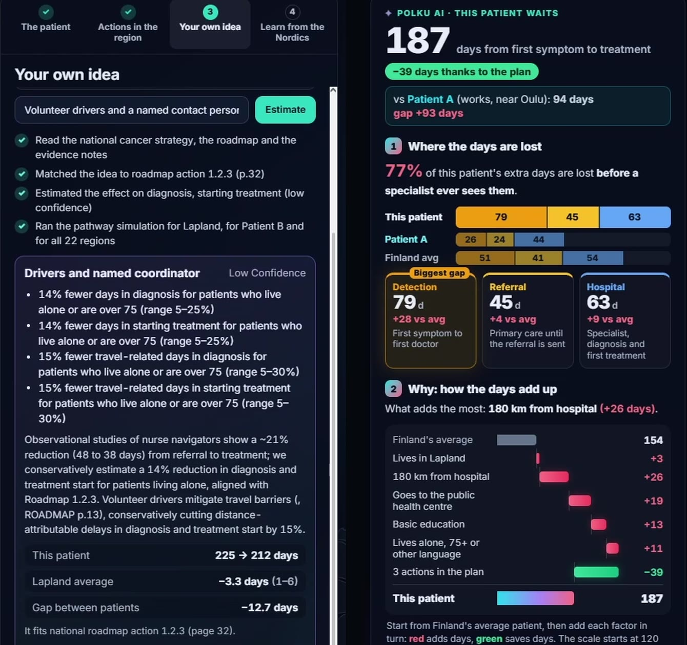
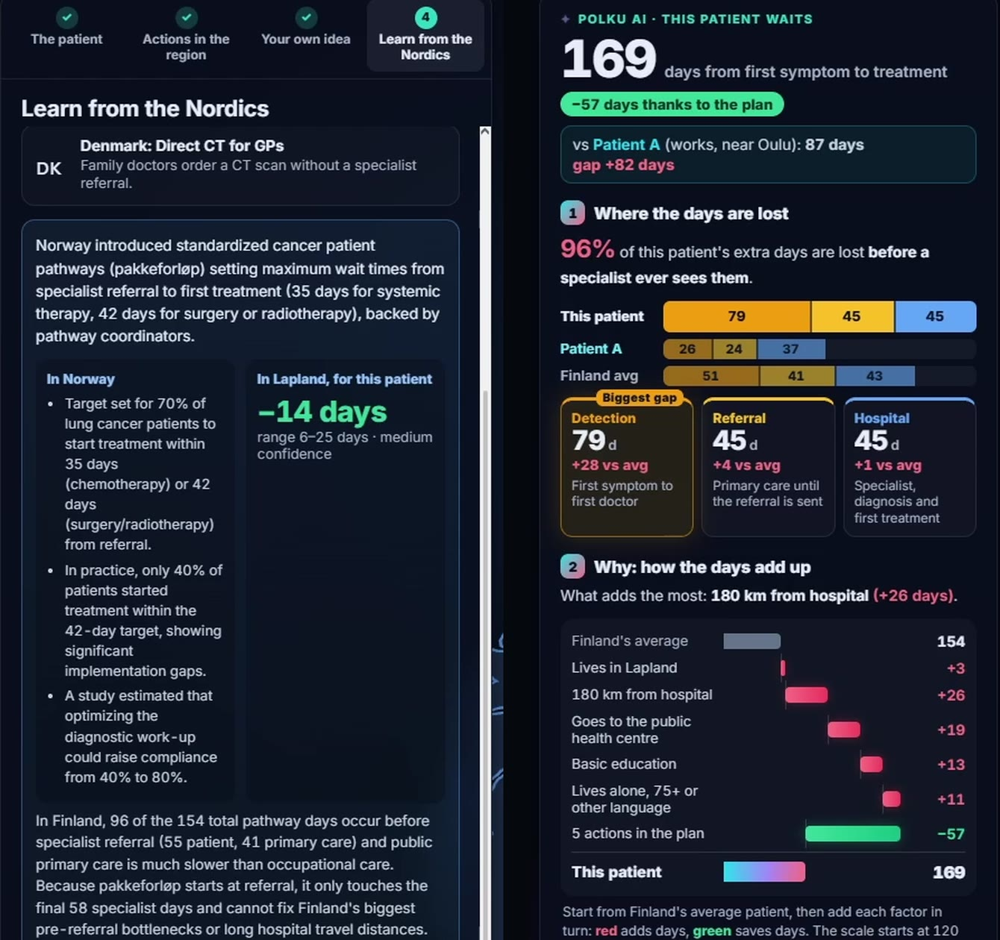

Patient A · works near Oulu
- Work health care
- 8 km from hospital
- Secondary education
- Has support
94days from first symptom to treatment
FdiProtocol · Junction 2026 · AstraZeneca — Equal Care Across Finland
An AI-powered simulator of the lung cancer pathway, in every wellbeing county of Finland.
AstraZeneca's question
Patient A · works near Oulu
94days from first symptom to treatment
Patient B · retired, rural Lapland
225days from first symptom to treatment
+131 days. More than four months longer, for the same disease.
Polku simulation of synthetic patients · public, aggregated data
Symptom to treatment, lung cancer
Seven weeks more than in Sweden. For Finland's ~3,000 patients a year, that is 141,000 extra days of waiting, every year.
Kuittinen et al., preliminary results (Yle MOT, 2025) · yearly total: Polku estimate, 3,000 cases × 47 days
Every county, simulated
From 135 days in Päijät-Häme to 176 in North Karelia, for the average patient.
But people differ more than places: 41 days between counties, 131 days between Patient A and Patient B.
Polku model estimate · Statistics Finland 2026 boundaries
1 Where the days are lost
Patient B's extra days, compared with Finland's average patient.
It is not biology. It is access: getting seen, and getting referred.
2 Why: how the days add up
Start from Finland’s average patient, add each factor in turn · scale starts at 120 days · Polku simulation
How Polku works




Built with Gemini
Finland's full national cancer strategy and roadmap, in long context.
Each action's effect from the evidence, with a range and a confidence level.
Polku's engine turns effects into days and tests 512 combinations of actions per county.
Every figure links to its source: the roadmap action, its page, the study.
Patient B, Lapland · days from first symptom to treatment
225days
3 What to do
Three actions from Finland's national cancer roadmap, with a timeline and the expected effect. Ready for the county to act on.
Downloadable in English and Finnish. Next: a 3-month pilot with one county, calibrated with real data via Findata.
165155
142104
21%29%
Data & transparency
Polku does all three, for every wellbeing county of Finland.
Team FdiProtocol · Junction 2026 · Built with Gemini